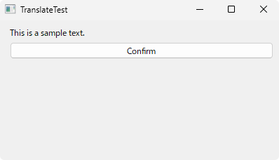
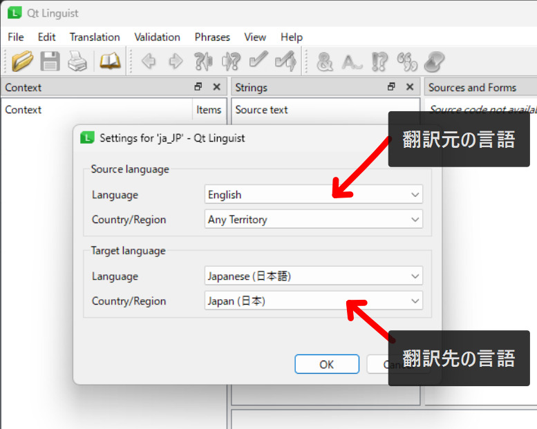
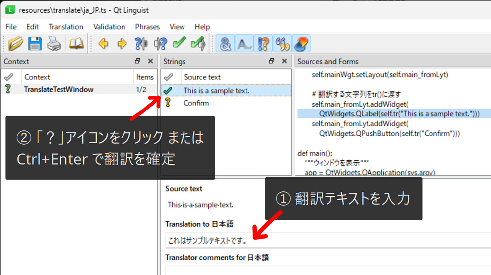
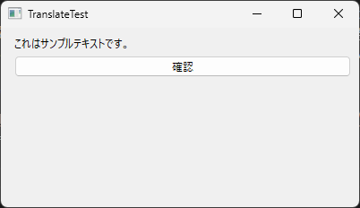

PySide
PySide - 翻訳・多言語対応の方法を解説【QTranslator】
2024/05/07

PySide には、アプリケーションを 多言語に対応 するシステムが提供されています。
特にCG業界では、英語と日本語のどちらでDCCツールやゲームエンジンを使うのかという派閥がまちまちであったり、あるいは他国籍のスタッフに自社開発プラグインを提供して業務を外注したいといったニーズもあるかもしれません。
そこで、PySideを使った多言語対応の方法を解説したいと思います。
実行環境
※ Maya2025に実行環境を合わせて解説します。
- Pythonバージョン：3.11.4
- PySide6バージョン：6.5.3
翻訳の流れ
PySideで文字列を翻訳する流れは、大まかに以下のようになります。
- 翻訳する文字列を
tr()関数に渡す lupdateコマンドで.tsファイルを作成linguistで.tsファイルを翻訳lreleaseコマンドで.tsファイルを.qmファイルに変換QTranslatorで.qmファイルを読み込み
文字列をtr()に渡す
まずは、多言語対応したいソースコードの文字列を tr() 関数に渡していきます。
tr() は、QCore.QObject クラスを継承しているサブクラス (QtWidgetsなど) であれば、クラスメソッドを使うことができます。
サンプルとして、以下のようなウィンドウを作成するクラスを書きました。
import sys
from PySide6 import QtWidgets
class TranslateTestWindow(QtWidgets.QMainWindow):
def __init__(self, parent=None, *args, **kwargs):
super().__init__(parent, *args, **kwargs)
self._init_ui()
self.setWindowTitle("TranslateTest")
self.resize(500, 300)
def _init_ui(self):
"""ウィジェットを構築"""
self.mainWgt = QtWidgets.QWidget()
self.setCentralWidget(self.mainWgt)
self.main_fromLyt = QtWidgets.QFormLayout()
self.mainWgt.setLayout(self.main_fromLyt)
# 翻訳する文字列をtr()に渡す
self.main_fromLyt.addWidget(
QtWidgets.QLabel(self.tr("This is a sample text.")))
self.main_fromLyt.addWidget(
QtWidgets.QPushButton(self.tr("Confirm")))
self.main_fromLyt.addWidget(self.label_01)
def main():
"""ウィンドウを表示"""
app = QtWidgets.QApplication(sys.argv)
win = TranslateTestWindow()
win.show()
sys.exit(app.exec_())
main()実行すると、以下のようなウィンドウが表示されます。
lupdateで.tsファイルを作成
次に、pyside6-lupdate コマンドで ts ファイルを生成します。
tsファイルは、ソースコード内の翻訳対象の文字列の情報を羅列したファイルです。
公式ドキュメントによると、lupdate コマンドの構文は以下の通りです。
lupdate [オプション] [ソースファイル]... -ts [tsファイルパス]オプション
任意のキーワードで挙動を制御できます。
特別なケースを除き、基本的に使用することはありません。(詳細は公式ドキュメントを参照。)
ソースファイル
翻訳可能な文字列を含むファイルのファイルパスを指定します。
複数ファイルを含むルートディレクトリのパスを指定することも可能です。
tsファイルパス
生成したtsファイルの書き出し先のパスを指定します。
サンプルコードからtsファイルを作成したところ、以下のような結果になりました。
pyside6-lupdate translate_test.py -ts resources\translate\ja_JP.tsja_JP.ts ▼
<?xml version="1.0" encoding="utf-8"?>
<!DOCTYPE TS>
<TS version="2.1">
<context>
<name>TranslateTestWindow</name>
<message>
<location filename="../../translate_test.py" line="22"/>
<source>This is a sample text.</source>
<translation type="unfinished"></translation>
</message>
<message>
<location filename="../../translate_test.py" line="24"/>
<source>Confirm</source>
<translation type="unfinished"></translation>
</message>
</context>
</TS>linguistで.tsファイルを翻訳
続いて、linguist でtsファイルを翻訳していきます。
linguistはPySideのインストール時に付属している、翻訳用のアプリケーションです。
PySideのインストールディレクトリ内の実行ファイルからアプリケーションを起動できます。
"...\Lib\site-packages\PySide6\linguist.exe"pyside6-linguist コマンドにtsファイルのパスを渡すことで、ファイルを開いた状態で起動することも可能です。
pyside6-linguist [tsファイルパス]ファイルを開くとダイアログが表示されるので、翻訳元・翻訳先の言語 を指定します。
 
ソースコード内の tr() に渡した文字列がリストアップされるので、翻訳したテキストを入力していきます。
翻訳が完了したテキストは ? アイコンをクリックするか、Ctrl+Enter でチェックマークに変更し、翻訳を確定します。
翻訳作業が完了したら、tsファイルを保存します。
保存されたtsファイルを確認してみると、以下のように内容が更新されていることが確認できます。
<?xml version="1.0" encoding="utf-8"?>
<!DOCTYPE TS>
<TS version="2.1" language="ja_JP" sourcelanguage="en">
<context>
<name>TranslateTestWindow</name>
<message>
<location filename="../../translate_test.py" line="22"/>
<source>This is a sample text.</source>
<translation>これはサンプルテキストです。</translation>
</message>
<message>
<location filename="../../translate_test.py" line="24"/>
<source>Confirm</source>
<translation>確認</translation>
</message>
</context>
</TS>lreleaseで.tsファイルを.qmファイルに変換
続いて、翻訳したtsファイルを .qm ファイルに変換します。
qmファイルはバイナリ化されたファイルで、アプリケーションが高速に翻訳言語を検索することができるファイルフォーマットです。
PySideにビルトインで提供されている lrelease コマンドでtsファイルをqmファイルに変換することができます。
pyside6-lrelease [tsファイルパス] -qm [qmファイルパス]QTranslatorで.qmファイルを読み込み
最後に、QTranslator でqmファイルを読み込み、翻訳した文字列をアプリケーションに実装します。
qmファイルを読み込むには、QTranslatorクラスのインスタンスを作成し、load() メソッドを使用します。
qm_file = "./resources/translate/ja_JP.qm"
app = QtWidgets.QApplication(sys.argv)
translator = QtCore.QTranslator(app)
if translator.load(QtCore.QLocale.Japanese, qm_file):
QtCore.QCoreApplication.installTranslator(translator)
load() は翻訳ファイルが正常に読み込めた場合 True を返します。
第一引数 には QLocale オブジェクトを渡します。
第二引数 にはqmファイルのパスを指定します。
オプション引数によってファイルの読み込み方法をカスタマイズできますが、少々ややこしいので本コラムではqmファイルをフルパスで指定しています。
詳しくはQTranslator の公式ドキュメントを参照してください。
サンプルコードに翻訳テキストを実装してみます。
import sys
from PySide6 import QtCore
from PySide6 import QtWidgets
class TranslateTestWindow(QtWidgets.QMainWindow):
def __init__(self, parent=None, *args, **kwargs):
super().__init__(parent, *args, **kwargs)
self._init_ui()
self.setWindowTitle("TranslateTest")
self.resize(400, 200)
def _init_ui(self):
"""ウィジェットを構築"""
self.mainWgt = QtWidgets.QWidget()
self.setCentralWidget(self.mainWgt)
self.main_fromLyt = QtWidgets.QFormLayout()
self.mainWgt.setLayout(self.main_fromLyt)
# 翻訳する文字列をtr()に渡す
self.main_fromLyt.addWidget(
QtWidgets.QLabel(self.tr("This is a sample text.")))
self.main_fromLyt.addWidget(
QtWidgets.QPushButton(self.tr("Confirm")))
def main():
"""ウィンドウを表示"""
# qmファイルパス
qm_file = "./resources/translate/ja_JP.qm"
app = QtWidgets.QApplication(sys.argv)
translator = QtCore.QTranslator(app)
# 日本語の翻訳文字列を読み込み
# 注意: ウィジェットを作成する前に翻訳ファイルの読み込みが必須
if translator.load(QtCore.QLocale.Japanese, qm_file):
QtCore.QCoreApplication.installTranslator(translator)
win = TranslateTestWindow()
win.show()
sys.exit(app.exec_())
main()実行すると、以下のようなウィンドウが表示されます。
ウィジェットの文字列を日本語に翻訳することができました！
まとめ
これまで個人的に開発していたツールが英語と日本語が混在してしまうことがよくあり、以前から存在だけは認知していたQTranslatorの使い方をようやくまとめることができました。
手順がややこしいことと、体系的にまとめられた国内のドキュメントが少ないこともあり、備忘録を兼ねて書いた記事ではありますが、少しでもお役に立てば幸いです。